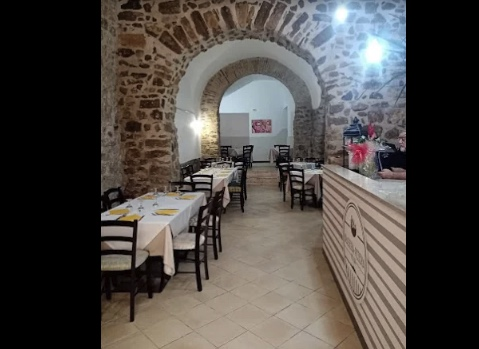
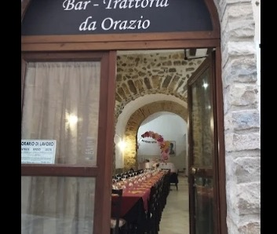
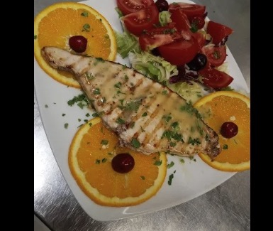
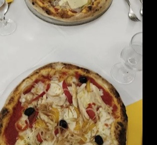

Caltanissetta · dal cuore della Sicilia
La cucina siciliana di una volta, sotto gli antichi archi di pietra. Pasta fatta in casa, pizza al forno a legna e l'accoglienza di una famiglia.


La Trattoria
Nel centro storico di Caltanissetta, a due passi da Palazzo Moncada, l'Antica Trattoria da Orazio vi accoglie in una sala unica: volte in pietra viva, tavole apparecchiate di bianco e quel calore che si trova solo nelle case siciliane.
In cucina, i piatti semplici e veri dell'antica tradizione: la trippa, lo stinco di maiale, i legumi cotti piano, il ragù della domenica. E ogni giorno, la pasta fatta in casa — come si è sempre fatto.

Dalla cucina
Pesce alla griglia, carni alla brace, verdure di stagione: piatti abbondanti, curati e presentati con il rispetto che meritano. Sapori tradizionali ma mai scontati — come dicono i nostri clienti.
☎ Chiedi il piatto del giorno
La Pizzeria
Impasto lievitato con calma, pomodoro buono e la fiamma viva del legno. Le nostre pizze le potete gustare in sala, portarle via o riceverle direttamente a casa: la consegna a domicilio è gratuita.
Galleria
Dicono di noi
★★★★★«Ottimo menù, ambiente familiare, gentilezza e cortesia dei proprietari, pasta fatta in casa, un sorbetto supremo.»
★★★★★«Personale gentile e preparato, locale accogliente, cibo di alta qualità: un mix di cucina casereccia e di ristorante stellato.»
★★★★★«Il cibo è abbondante e di qualità, tutto fatto in casa. Sapori tradizionali ma non scontati, con un ragù eccezionale.»
★★★★★«Locale rustico, personale cordiale e amichevole, qualità del cibo molto buona. Da tornarci!»
Prenota il tuo tavolo o ordina la pizza a domicilio — la consegna è gratuita.
☎ 351 183 3169Dove siamo